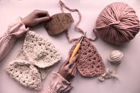

Crocheting is a simple and creative hobby that uses yarn and a hooked tool called a crochet hook to make fabric.
By pulling loops of yarn through other loops, people can create many different items. Some common things made by
crocheting
are scarves, hats, blankets, and small stuffed toys. It is easy to start because you only need a hook and yarn.
With just a few basic stitches, beginners can quickly learn how to make simple and useful projects.Many
people enjoy
crocheting because it is relaxing and fun. The repeated motion of making stitches can help people feel calm and focused.
It also allows them to be creative by choosing different colors and patterns. Crocheting can be a great way to make handmade
gifts for family and friends.
I like crocheting because it helps me feel calm and relaxed. When I sit down with my yarn and hook, I can forget about stress and focus on making each stitch. The repeated motion is peaceful, and it feels good to watch something slowly grow in my hands. Crocheting also gives me a break from screens and busy schedules, which makes it a healthy and enjoyable hobby for me.I also like crocheting because I can be creative. I get to choose my favorite colors and patterns and turn simple yarn into something useful, like a scarf or a small toy. It makes me proud to finish a project and see what I have made by myself. Sometimes I even give my crocheted items to friends or family as gifts, which makes it even more special. Many people enjoy crocheting because it is relaxing and fun. The repeated motion of making stitches can help people feel calm and focused. It also allows them to be creative by choosing different colors and patterns. Crocheting can be a great way to make handmade gifts for family and friends. Overall, it is a wonderful hobby that combines creativity, patience, and skill.
